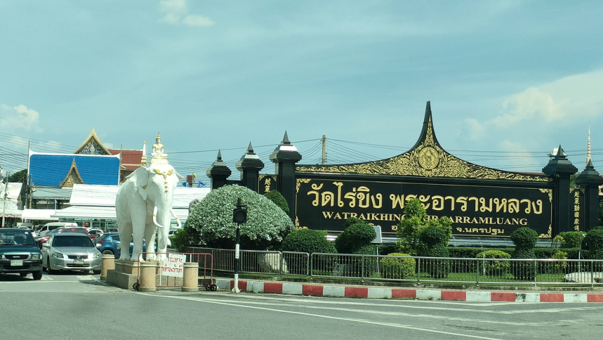

Wat Rai Khing
วัดไร่ขิง เป็นวัดสำคัญตั้งอยู่ที่ริมแม่น้ำท่าจีน (เรียกอีกชื่อว่าแม่น้ำนครชัยศรี) ตำบลไร่ขิง อำเภอสามพราน จังหวัดนครปฐม สังกัดคณะสงฆ์ฝ่ายมหานิกาย สร้างโดย "สมเด็จพระพุทธฒาจารย์ (พุก)" มีหลวงพ่อวัดไร่ขิงซึ่งเป็นพระพุทธรูปปางมารวิชัยเป็นพระประธาน ที่ชาวนครปฐมเคารพนับถือ เดิมเป็นวัดราษฏร์ ต่อมาจึงยกฐานะขึ้นเป็นพระอารามหลวงชั้นตรี ชนิดสามัญ เมื่อวันที่ 10 กรกฎาคม พ.ศ. 2533